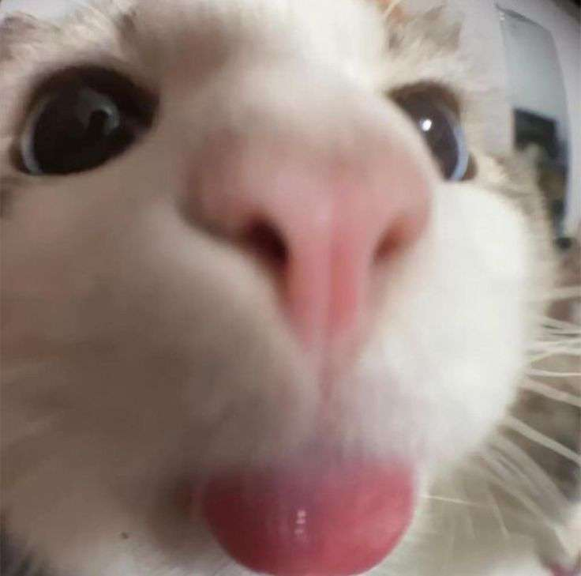

Meu nome é Francisco Paschoeto, atualmente tenho 18 anos e estou cursando Análise e Desenvolvimento de Sistemas no UniCesusc. Moro em Florianópolis, no bairro de Jurerê e atualmente possuo esses conhecimentos no mundo da tecnologia...
- Python - Lógica de Programação
- Banco de Dados - PostgreSQL
- Prototipagem de Tela - Figma

Um pouco mais sobre mim...
Começei na internet jogando jogos online (com meus 6 anos de idade) e desde então sou até que "cronicamente online". Hoje em dia não jogo mais nenhum jogo, tenho essa meta para 2026 pois eu ficava muito viciado e consumia muito o meu tempo, não possuo redes sociais a não ser WhatsApp e Discord e escolhi essa área porquê assim como o Físico estuda os fenômenos da natureza para entender o mundo real... eu tenho vontade de entender esse tâo falado mundo virtual.